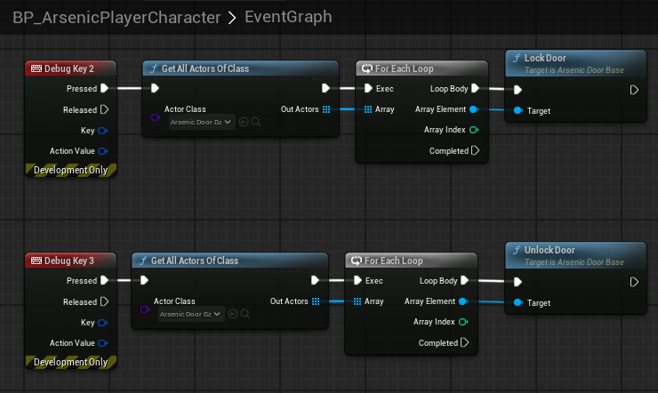

Doors
Overview
Doors inherit from AArsenicInteractActorBase and have their own base class AArsenicDoorBase. In order for the doors to manage their state as World Partition loads and unloads them, as well as integrating with the save system, doors must have a UniqueDoorName. For organizational purposes I strongly recommend using the following format: “CardinalDirection RoomName DoorName DoorNumber”. For example, a door in the atrium might have the name “West Atrium HiddenDoor 0”. You are not required to follow this naming convention, but it will be very hard to have duplicate door names with this system. Keep in mind that if door names are duplicated their state will not be saved/loaded properly.
Doors get split into child classes to make things easier for designers, however this means that some doors have different features than others. Here are some features and functions that you’ll find in the various door classes:
bool StartOpened;bool CloseDoorAutomatically;TrySlamDoor();- called when the door gets locked while the door is openfloat SlamSpeedMultiplier;- Multiplied byDefaultDoorSpeedwhen the door gets slammedLockDoor();UnlockDoor();
There are also several blueprint implementable events that can be called by designers in blueprint to spawn sounds and handle other behaviors:
OnDoorLocked();OnDoorUnlocked();OnDoorStartOpen();OnDoorFinishOpen();OnDoorStartClose();OnDoorStartSlam();OnDoorFinishClose();OnActionTextChanged();OnDoorStateLoaded();
For optimization purposes, doors do not use collision spheres to detect when the player is nearby. Instead, every second (or half-second for sliding doors) the distance between the door and player is calculated and automatic doors will open and close when certain thresholds are met. This means that thresholds need to be slightly higher than expected due to the delay in distance calculations.
There are some helpful debug tools set up on the player character to lock and unlock doors for testing, but I can’t promise that functionality will stick around forever:

AArsenicDoubleDoor
Because of the need for a second mesh and second open point vector, this child class was created. They should be able to just be dragged into the world and work as expected. There are many configurable variables you can set in the details panel if you want different behavior.
BP_SingleSlidingDoor
These are configurable to be vertical sliding doors and horizontal sliding doors. The OpenPoint1 vector just needs to be manipulated to achieve the desired result. To anyone reading this, you’re welcome to create another AArsenicDoorBase to separate horizontal and vertical sliding doors. These work exactly the same as double sliding doors, except for the need to manually set OpenPoint1.
Hinged Doors
Hinged doors were formerly split up into BP_SimpleHingedDoor and BP_StatHingedDoor but have since been combined into a single class. If you need the functionality of a StatHingedDoor, simply tick the RequiresStatCheck box, configure the door to your liking, then fill out the AC_StatInteraction component to ensure the UI shows everything it needs to. When the stat interaction is completed, the door will stop using the AC_StatInteraction component and start using the AC_SimpleInteraction component and behave like a standard hinged door.
Managing Doors With World Partition
The save game subsystem (currently UArsenicSaveGameSubsystem) contains TMap<FName, FDoorSave> CollectedDoorData;. This gets updated every time the door state changes. Each individual door handles its own update to this map, allowing a running list of doors to be collected and stored in this variable as the player runs around the world. The doors then reference this list every time they’re loaded to see if they have an entry that contains their UniqueDoorName. If one exists, they set their state based on that data. If not, they run InitializeFirstTimeDoorState(); and register themselves with the save game subsystem.